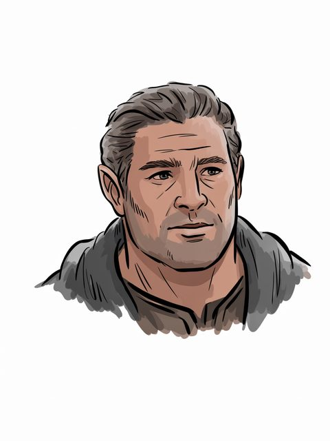

The Arda Archive · Volume III · Records of Persons
The Arda Archive · Celepharncdlxxiii
◌
Celepharn
House of Elendil

House of Elendil
Of the house
House of Elendil of Arthedaina
The dates as the archive holds them
–T.A. 1191b
The name in the scriptsc
— Tengwar, Quenya, classical, APPLIED by this archive — Cirth, Angerthas Moria, APPLIED by this archive
The archive sets this name in the tengwar, Quenya, classical mode APPLIED to it and in the cirth, Angerthas Moria mode APPLIED to it. TOLKIEN DID NOT WRITE IT SO: the letter values are Appendix E's, read from the tables named below; the setting of this name in them is the archive's own work and is offered as nothing else. The sarati are REFUSED, and the refusal is the archive's published answer: it holds the shapes -- 48 of 48 of the ConScript block, Björkman's outline face, and 66 value-labelled plates -- and nothing whatever that binds a shape to a sound. Every value table in every source it can reach is an image carrying no text.
“aphadon ‘follower’ or the names Celepharn, Ara-”f
“14 Celepharn born 979 lived 212 years died 1191”g
“Celepharn – From 1110–91 Third Age, fourth King of Arthedain, father of”h
a The text — LotR App A I [C]
b The text — [I-H]
c The transcription is the ARCHIVE'S OWN WORK and is not attested: the letter values are read from site/arda_scripts.json, site/arda_cirth.json and site/arda_cirth_codepoints.json, and the mode is named beside each line. [I-M]
d The ruling — the owner's ruling of 13 August 2026, on the 552 generated images: 'we are free to use them'. That settles the LICENCE and does not settle the HAND, which is recorded above as what it is. [C]
e The text — Tolkien's Legendarium · l.4172[EXT]
f The text — Gateway to Sindarin · l.1302[EXT]unreliable — see the colophon
g The text — The Peoples of Middle Earth · l.6393[C]
h The text — The Complete Tolkien Companion · l.4109[EXT]
☞BH·iThe
A triskele boss — the archive's own hand
Volume III · Records of Personscdlxxiv
◌
The name stands in 12 cited lines, in 5 of the corpus's 192 texts — most often in Gateway to Sindarin (6), The Peoples of Middle Earth (2), The Lord of the Rings (2).i
The drafts against the published text
2 cited lines stand in 1 volume of the drafts and 2 in 1 of the published books — the published text carries it more often than the drafts did.j
Two trees and the moons — the archive's own device, not a likeness
“CELEPHARN (S.) (d. TA 1191) Dúnadan, fourth King of Arthedain” — the name is near this line and the archive does not assert that it is this record.m
As the archive holds the line
of House of Elendil; in Arthedain; child of Mallor; father or mother of Celebrindor; –T.A. 1191.n
Named in the same lines
Celebrimbor (1), Celebrindor (1), Mallor (1), Malvegil (1) — a shared line is a fact about the line, not a claim that the two met.o
counted from corpus lines that name BOTH records. A shared line is a fact about the line, not a claim that the two met; `eg` names a line a reader can open. [C]
By its style
Celepharn is styled King of Arthedain — “Celepharn Fourth King of Arthedain. 193”p
What was looked for and not found
a marginal hand recording a change to this record — searched over 59 verified notes in site/arda_hands.json, and nothing was found.q
What was looked for and not found
recorded by-names for this figure — searched over 47 worked sets in site/arda_epithets.json, and nothing was found.r
i Counted — site/arda_apparatus.json[C]
j Counted — site/arda_apparatus.json[C]
k Counted — site/arda_apparatus.json[C]
l Counted — site/arda_apparatus.json[C]
m The line — The Complete Guide to Middle Earth · l.2913[EXT]
n The table — LotR App A I[C]
o Counted — site/arda_apparatus.json[C]
p The line, found through Tolkien Gateway — The Peoples of Middle Earth · l.14709[C]
q The search — site/arda_apparatus.json[C]
r The search — site/arda_apparatus.json[C]
☞BH·ijCemendur
Seven stars — the archive's own tailpiece
Where the cited line does not hold the value
the titles the texts give — King of Arthedainthe quote occurs at line 10999, not at the cited line 14709 (3710 away)
What this archive holds back, and why — 6 item(s)
corpus silent ×3 — no tier-1 corpus file holds this value as whole words. C831 lets a reader see a TG datum only where a Tolkien text carries it; this archive's Tolkien texts do not.
not distinctive ×2 — the value is a common word, a field label, or a fragment of the person's own name, so a corpus match on it would confirm the vocabulary and not the claim.
not beside the person ×1 — the value stands in this archive's tier-1 corpus and so does the person's name, and no ONE LINE carries both in a form that attributes the value to this person. Four things put an item here and they are all about the LOCUS, never about the claim: the two never share a line; every mention of the name on that line is a genitive (`the Heir of Isildur was crowned King of Gondor` -- a true claim on a line about Aragorn); another person the archive holds stands between them (`Isildur had established Meneldil as King of Gondor`); or the two match the line under folding but not as a token sequence, so the archive cannot say precisely where they stand. The claim may well be true. This module has no line it can show a reader for it, and a citation a reader cannot check is what rule 1 forbids.
Part of the Arda Archive — a corpus-first index of Tolkien's legendarium; claims are cited or marked how far they are inferred, silences are declared, and the colophon prints how many claims carry neither.